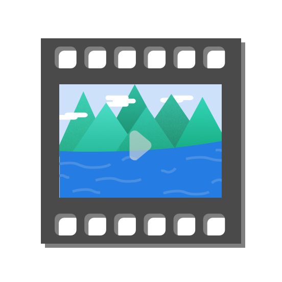
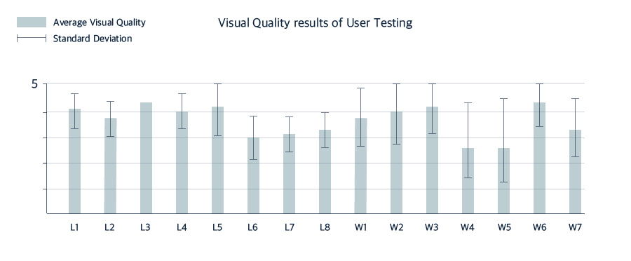

Collecting Video Database
Computer Science Capstone Project
My Contribution
Developed image alphametting, video synthesis, and image blending function of the application
Project Size
Team of 3 for 16 weeks
Shin-young Mo (Programmer)
Shi-hyeong Ahn (Programmer)
Tools
Python, OpenCV

It is quite easy to extract an image from a video, since a video consists of consecutive images called frames. In contrary, creating a video from a single image seems impossible because a single image cannot create a totally new frame. According to recent studies, however, the possibility is increasing rapidly.
In this project, we aim to construct a video database that is specialized for non-photorealistic images and create non-photorealistic fluid animation from a single image using that database.
Several existing studies have made efforts to construct video databases for creating fluid animation from a single image, but those databases were specialized for photorealistic images. Thus, it is difficult and inefficient to apply those databases to non-photorealistic images such as paintings and illustrations. Systems that is suggested by existing studies involve many steps and their targets are users based of engineering knowledge. Therefore, user-centered system that maximizes efficiency and convenience for the general public when synthesizing the targeted image and videos from the database is needed.
Collecting Video Database
Average Image

Image Alpha Matting
Video Synthesis

Technical Overview
There are three criteria for video sample:
1) The position of the camera should be fixed and focus on the fluid.
2) Fluid should be the main subject of the video.
3) Video samples should be clear and high-definition. To increase the number of samples, we rotated and cropped the existing videos. We collected 150 videos and set the resolution to 400*360.
For each video example, we compute the average image by averaging the frames to obtain representative appearance information.

We used watershed algorithm in order to extract the fluid part from the target image. Watershed algorithm is usually used for image segmentation in video processing. Users can designate the region of target image as fluid part with minimum mouse click.
The system computes the difference of frames in selected video example using average image. By adding the difference to the mask image of the target, we can get fluid animation on the target image. However, since there are differences in saturation the synthesized video looks awkward. In order to overcome the awkwardness, we used image blending and Gaussian blur technique.

This is the simulation video of our project. Examples of synthesized video are listed below.

Lake 1

Lake 3

Lake 4
Waterfall 2

Waterfall 3
We conducted a user testing in order to test our system in terms of visual quality. We designed a study in which fifteen participants were asked to test our application with 8 different lake images and 7 cascade images. Then, the participants are required to rate the visual quality of the results on a scale 0 to 5. Majority of participants responded positively and most of the images are rated at over 3. There are some exceptional cases whose records are below average due to lack of database. Since we collected videos in which the speed of a current is fast, the database was not appropriate for images that have calm atmosphere.
